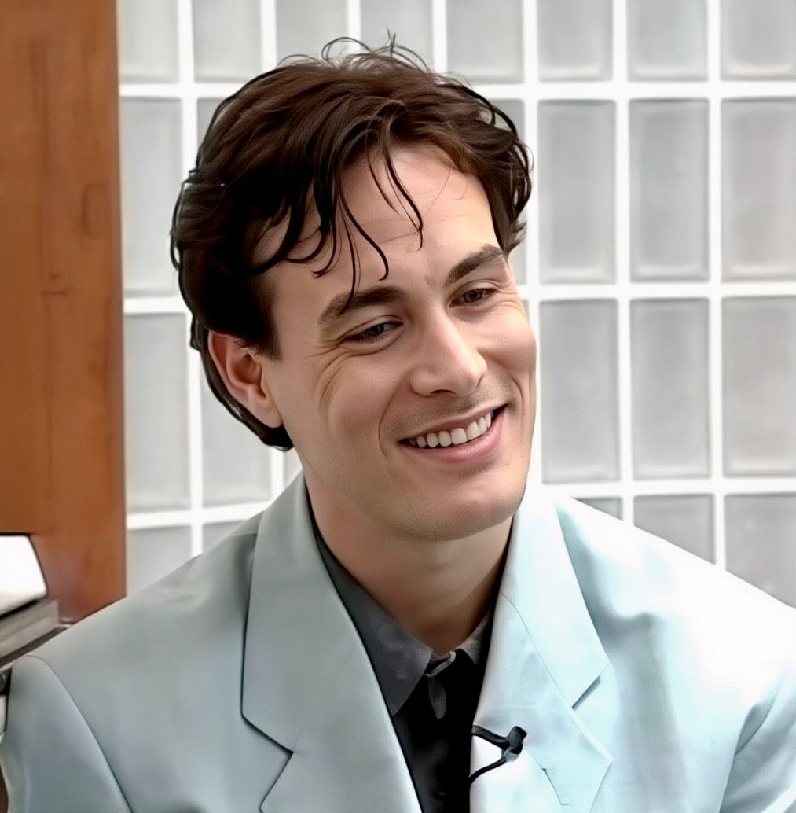

Red de Cuentas · Acuerdo 1993 · Inconsistencias Documentadas

| Título | OSINT Audit 2026 |
| Tema | Brandon Lee · The Crow |
| Idioma | ES / EN |
| Fuentes | Solo públicas |
| Compilado | 09/06/2026 |
Cuatro fuentes primarias verificables presentan inconsistencias directas con la narrativa oficial sobre la muerte de Brandon Lee y las personas involucradas.
Solo la Madre Demandó: La Wikipedia oficial indica que solo Linda Lee Cadwell presentó la demanda por negligencia contra Crowvision Inc. Otras narrativas sugieren que Hutton fue codemandante activa.
Hutton Compensada por Crowvision: El comunicado oficial vino de Crowvision Inc., no de la familia Lee. Hutton fue compensada directamente por la productora, sin derechos legales automáticos como prometida no casada.
Escena Rodada Sin Coordinador: La escena fatal se filmó "sin el consentimiento del coordinador de armas, que había sido enviado a casa temprano esa noche."
Dunnam Nombrado Directamente: ET Vault nombra directamente a "Dunman" (Douglas Dunnam) con fractura de costilla en el set. La narrativa oficial presenta estos accidentes como anónimos.
Fuente primaria: Minuto 16:57
Eliza Hutton: Acreditada como "assistant: Mr. Lee" en The Crow, además de la dedicatoria final "for (as Eliza)".
Cindy J. Gray: Acreditada como "production secretary".
"Lee's fiancée, Eliza Hutton, also was included in the settlement, according to a statement from Crowvision Inc."
— Chicago Tribune / Associated Press, 26 octubre 1993
Datos verificables: Hutton fue compensada directamente por Crowvision Inc. Como prometida sin matrimonio formal, no tenía derechos legales automáticos bajo la ley de EE.UU. en 1993. Su inclusión fue negociada.
Los créditos completos de IMDb confirman roles laborales reales en la producción: